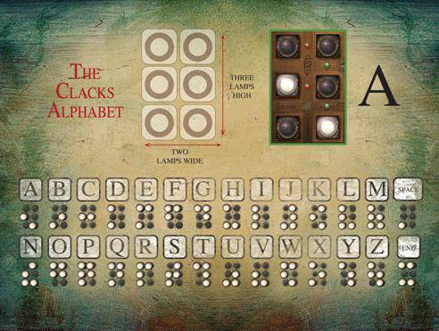

Clacks Messages - encoding and decoding text messages
Covert clacks messages into multiple pages
At the March 2016 London Clojurians code dojo at uSwitch our group created a Clacks Interpreter in honor of Terry Pratchett, the author of the amazing Discworld series of books (and a few TV shows of those books too).
In the 33rd Discworld novel called Going Postal, messages are sent faster than a speeding horse via the Clacks system. This composes of a series of towers that cross a continent and pass messages on via combinations of lights. Each tower sees a grid of lights from a distant tower and sends the message on to the next tower.
The Clacks system was actually introduced in the 24th Discworld novel called "The Fith Elephant", however its the "Going Postal" book where we learn the full history of the Clacks system.
We created a Clacks Interpreter that converts any English message into its corresponding clacks signal, based on the Clacks alphabet as defined by the board game of the same name. The board game defines the alphabet as a 2 by 3 grid (although in the Discworld its actually 8 large squares). Naturally, the interpreter also converts the Clacks signal back into an English message too.

The code is available on Github at: https://github.com/liamjtaylor/clacks-messenger and read on for a walk through of how we came up with the solution.
The Challenge
We wanted to be able to take any English language messages and transmit it across the clacks network, then
Representing a Clack
For each clack, we read the pattern from the top of the first column to the botton, then from the top of the second column to the bottom. A light in a position represents a 1 value and no light represents a 0 value. This gives us our 6 number pattern for each clack in the alphabet.
Deciding the data structure
The initial data structure chosen was essentially just modelling each individual clack. Since a clack is a 2x3 structure, the simplest way to represent a clacks is to have a vector that contains 2 vectors, each with three elements.
So a simple expression of the letter a in the clacks alphabet would be:
[[0 1 0][0 0 1]]
Therefore we could define a single letter of our alphabet as follows:
(def a [[0 1 0][0 0 1]])
Before we define the complete alphabet using this data structure, lets test if we have the right data structure for our conversion process.
Testing a simple conversion with our data structure
Lets try the simplest way to convert a character into a clack:
(defn character->clack [character]
(if (= character "a")
a
(str "Sorry, character is not yet in the alphabet, please create a pull request")))
Calling the function converts a string into the corresponding clack
(character->clack "a")
Although the code is simple for 1 character, it does hightlight the problem of converting the whole alphabet. We would need either a deeply nested set of if statements or a very long case statement, neither of which seems to be a particularly functional approach or idiomatic Clojure.
Even if we did use a case statement, how would we convert a clack back into a character?
So perhaps we need to change the data structure, one that provides an easy way to map to values together.
Also, there seems no value in mapping values to a 2x3 grid as long as we consistently express a clack.
Defining the alphabet with a map
A map data structure in Clojure is a hash map (a key & value paring) for example I could define myself as a map
{:name "john" :age "21" :twitter "jr0cket"}
Its very common to use Clojure keywords for the keys, to make it easy to look up a particular value by refering to the keyword.
So the new design for our clacks data structure is as follows
{:a [0 1 0 0 0 1]}
To help with testing this new data structure desing, we crated enough letters of the clacks alphabet to make some simple words, i.e bat
(def alphabet {:a [0 1 0 0 0 1]
:b [0 0 1 0 1 0]
:t [1 0 0 1 1 1]})
Testing the map design
We can use the keyword to lookup the value of its clack code
(alphabet :a)
;; => [0 1 0 0 0 1]
Then we created a simple function to convert a string to a sequence of clacks
(defn character->clack [letter]
(if (= letter "a")
(alphabet :a)
(str "Sorry, character is not yet in the alphabet, please create a pull request")))
The
->character is part of the function name. This is a Clojure naming convention used when the function you are defining converts from one type to another.
And call the function as follows
(character->clack "a")
;; => [0 1 0 0 0 1]
Converting a word
Now we want to convert a whole word to a clacks sequence. It seemed the easiest way to convert a whole word was to convert each letter at a time using the map to look up each clack code, returning all the clacks codes in a sequence.
So we redefined the string->clacks function to take in a whole word.
We used the map function to apply a conversion function over each element in the word (each element of the string). This conversion function called clacksify.
(defn clacksify [letter]
(let [character (str letter)]
(alphabet (keyword character))))
(defn string->clacks [word]
(map clacksify word))
Now we could convert any workd that used the letters of our limted alphabet. We chose bat as a simple word.
(string->clacks "bat")
As we are passing a string and not a keyword to the
clacksifyfunction, then we first convert the string to a keyword using thekeywordfunction.
Converting the clack to a string
Is there a simple way to look up a key given a value that is unique in the map?
All Clack codes are unique in the map, but there did not seem to be a simple expression to find the key when given a value.
We could have created a second mapping, however having two maps seemed redundant and a potential cause for silly bugs.
The answer was simple once we found it. As the clack codes are unique, they could be used as keys for the letter values, we just needed to swap the map around. Swapping a map's keys and values was done by writing a reverse-map function.
(defn reverse-map
"Reverse the keys and value pairs in a map.
Allows the map to be used to convert from a clack to a letter without defining a second map"
[m]
(into {} (map (fn [[a b]] [b a]) m)))
So we defined the function declacksify which takes a clack code and returns its corresponding character. The clack code returns the corresponding keyword rather than a character, so we use the name function to convert the keyword into a character name.
(defn declacksify [clack]
(name ((reverse-map alphabet) clack)))
(defn clacks->string [clacks]
(map declacksify clacks))
So calling these functions with a clacks
(declacksify [1 0 0 1 1 1])
;; => "t"
(clacks->string [[0 0 1 0 1 0] [0 1 0 0 0 1] [1 0 0 1 1 1]])
;; => ("b" "a" "t")
Its probably at this point we should have realised that we didnt need to use keywords to represent the characters of the alphabet. In fact, using keywords made a little more work for us.
Tyding up the output
Our clacks->string function returns the right result, but not quite in the format we want. Rather than a single string, we get the individual characters.
Using the reduce function we can apply the str function over the resulting characters to give a single string. So our function becomes
(defn clacks->string [clacks]
(map str (map declacksify clacks)))
Working with another language
Thanks to a flexible design with no side effects or side causes then its really easy to replace the English language alphabet with another language that can be encoded into Clack codes. So languages based on the greek, latin or cyrilic alphabet could be send if a suitable alphabet with clack codes is supplied.
Summary
We were quite happy with the code produced in this dojo. The code is pretty readable we believe and we have taken a fairly simple approach to the design. In hindsight we could have made the code even easier if we had tested out the map data structure a little more and used a string character for each letter in the alphabet.
Working in an editor attached to a REPL worke well (Vim in this case, but not relevant to the development of the code). The behaviour of the code was tested with almost every expression, so we gained a good understanding of each line of code.
There are ideas to take this further and show a visual representation of a message passing through a chain of clack tower, showing how the message would pass through the system at a human speed. This woud assume a fixed time to show a clacks between each clack tower and a minimum level of speed by the human part of the clacks tower.
No REPL's were harmed in the making of this code, although one REPL was heavily used.